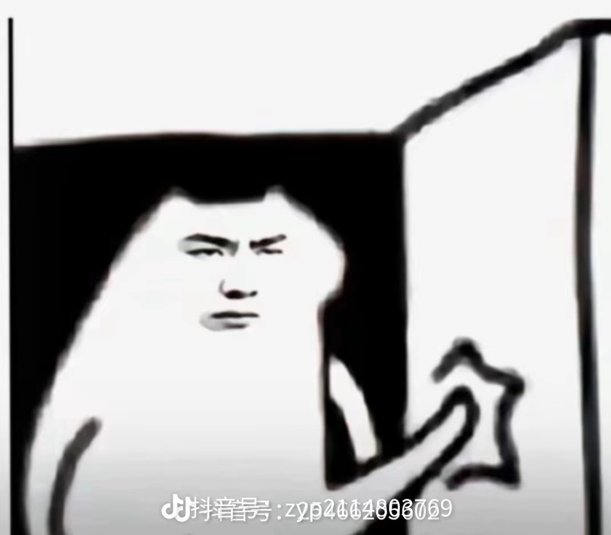
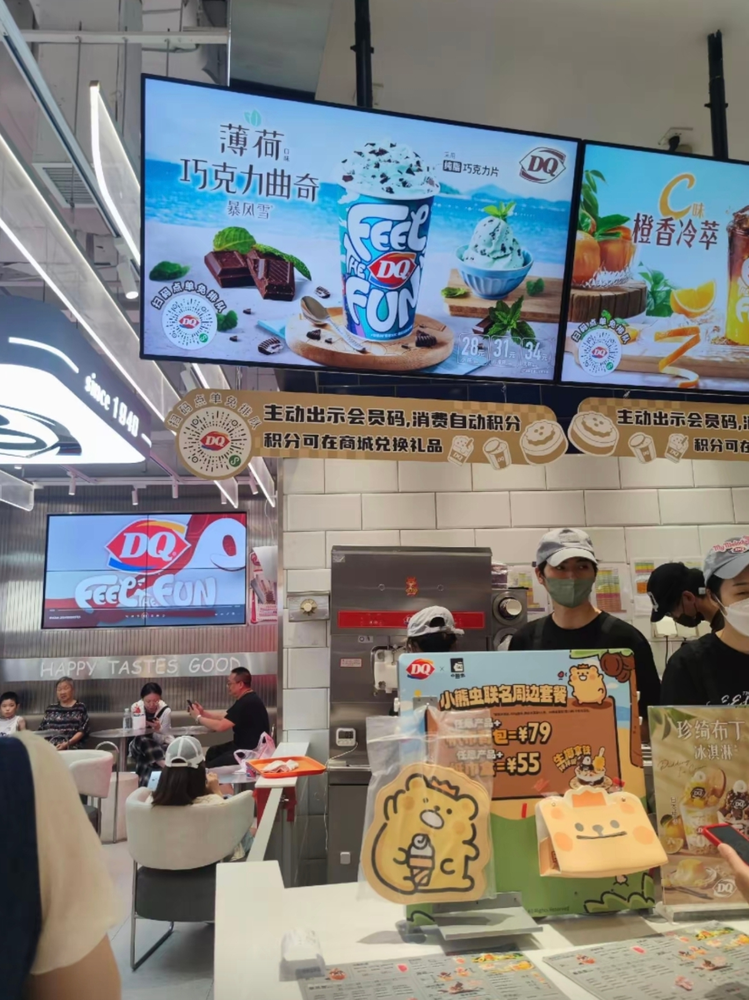
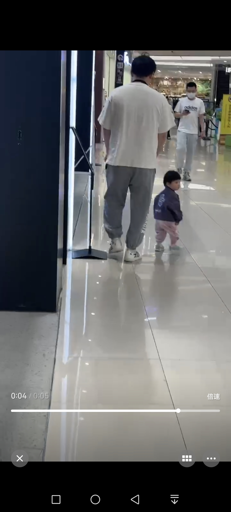
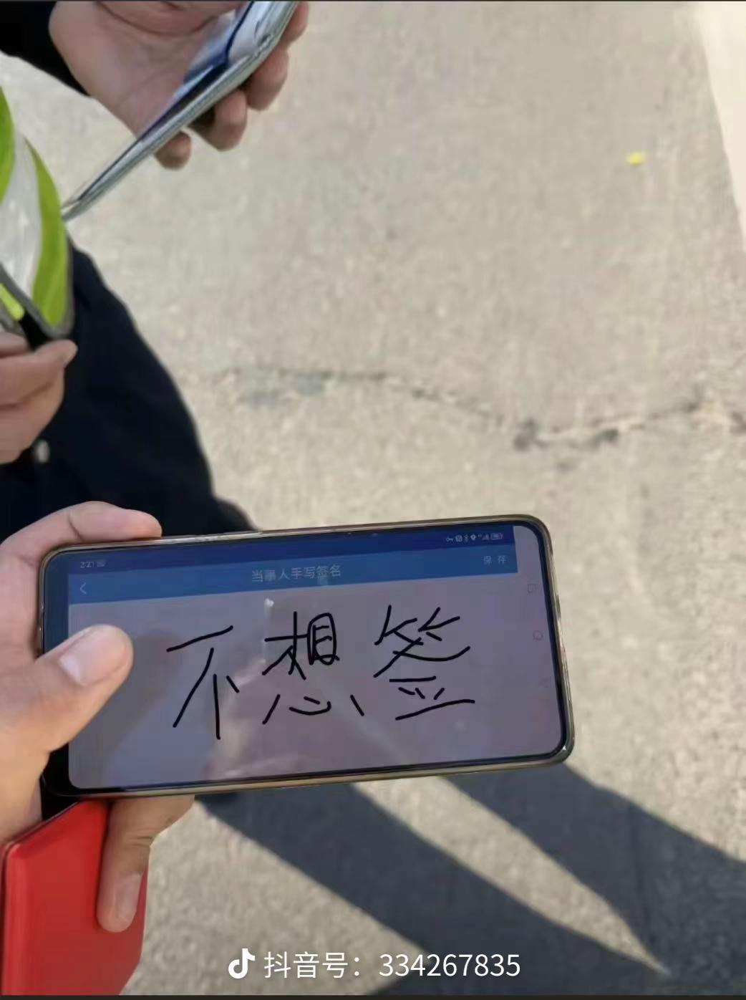
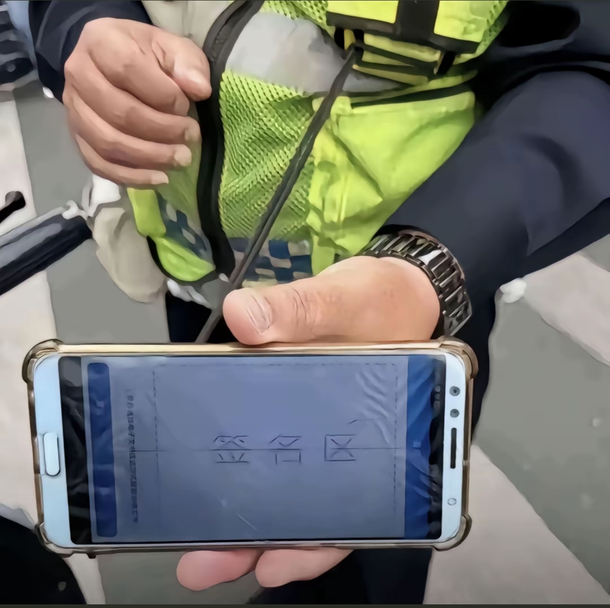
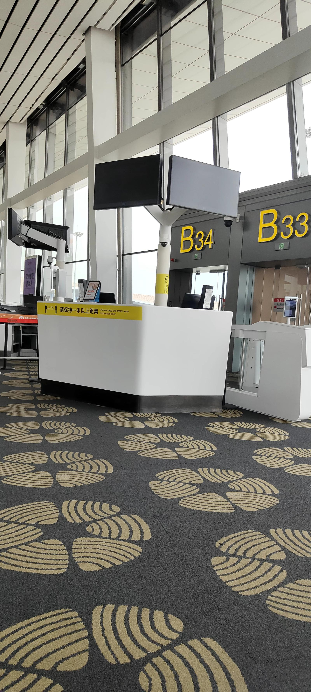
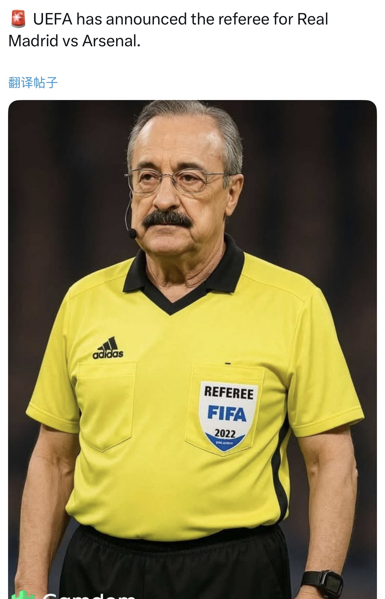
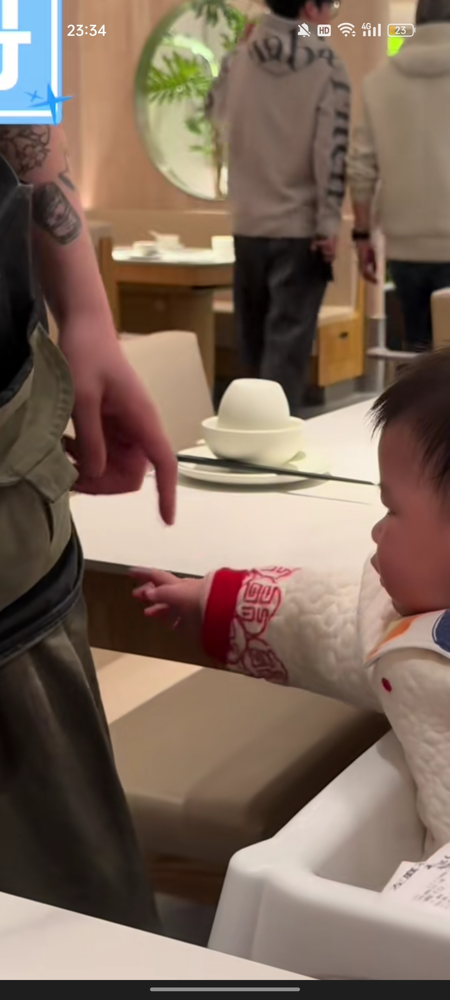
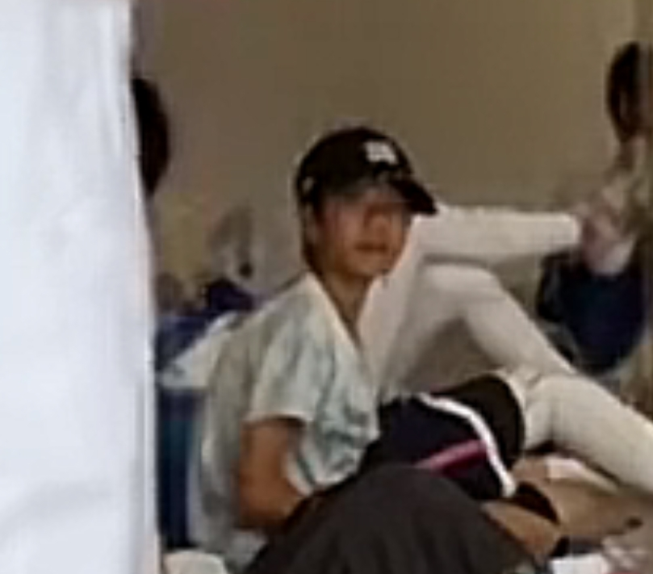

所有人都在期待高荣扣进击掌
谁懂 剩下的你听懂我吗
我感觉我也能去捣乱[捂脸]
一场下来只听到了犯规和哈哈哈哈哈哈
这都是各街道台球厅派来的[疑问]
我一个外行都看笑了[捂脸][捂脸][捂脸]
我以为我已经够屎了……没想到世界上比我屎的人居然有两个[黑脸]
开了家DQ[宕机]
以为你没做自媒体之前应该也就是普通人，合着你是大老板[黑脸][流泪]
好家伙 才知道我爱吃的dq居然是我的互联网女鹅家开的 姨姨以后除了来姨妈天天给你充奶粉钱[微笑]
爸爸都是DQ老板了为啥妈妈还要出去上班啊，真的好奇一下。
我天dq 我从来没吃过dq的蛋糕[捂脸]
今日任务: 左边擦擦，右边擦擦，嘟嘟嘟嘟嘟✓ 下班下班下班下班，老婆点菜✓ 耦合器，10块✓
和着你开了一家dq啊恩恩
哥，今天又是我俩带恩恩吗 
原来这是恩总的店，看来奶粉钱有我的一份[坏笑] 
恩恩长大后交男朋友 恩恩：“我跟你说我小时候…” 男朋友：“我知道我看过，嘟嘟嘟嘟嘟嘟…”
恩恩一定要先叫姐姐，再叫爷爷们啊
他说太便宜了的时候我心里五味杂陈的[流泪]
那天我女朋友碰到了你们 特意发给我看 咋不是我碰到呢[泣不成声] 
哇塞了恩总，DQ每次都是路过还没吃过[流泪]
我去dq打工也能见到恩恩吗[听歌]
[不失礼貌的微笑] 
这是哪里哦 哥
[捂脸] 你这个BGM 哈哈哈哈哈
bgm卡的真准[捂脸][捂脸]
遇上查酒驾我可兴奋了，老远就嚷嚷“让我吹，让我吹”[捂脸]我老公一把摁住我说“你一个坐副驾的吹什么吹啊”[捂脸]
出门遇见粉丝 老让我签名 
这只猪不够笨，我给你at一只笨的[咒骂]
他是唯一一个就算塌了我都觉得很有味道的一个[泪奔]就那种明知道他是坏男人反而更爱了……但我不粉他每次刷到会被吸引，非常非常吸引想去他演唱会
其实他的歌还挺好听的 纯路人
路人比粉丝还恨张峻豪这句话在评论区完美诠释了[捂脸]
不粉，但谁懂sky walker [憨笑]
那年江边晚会的promise，就是我喜欢你的开始[流泪]
没开玩笑我建议严查promise我真的陷在直拍里出不来了[憨笑][憨笑][憨笑]
不会错过每一个promise的视频[送心]
这是张峻豪个人演唱会吗？
候机着呢 给我推上空难视频了[泣不成声] 
可怕的是这飞机修一修又服役到了1998年[快哭了]
据说到目前为止那位被吸出舱外的空姐到现在还没找到[流泪]
羽毛球角度，桃田贤斗确实天才，巅峰期和其他高手交锋都是碾压，结果一场车祸毁了。
桃田贤斗就算赌博过，但他在南京世锦赛拿奖时甚至没唱国歌
[黑脸]孩子们答案来了 
一开始就道歉给当当再买一个就完事了，愣是给当当语言输出十分钟[捂脸]当当又没米乐能说
强势的妈，不在场的爹，火上浇油的弟弟，专心修书包的爷爷，不敢插话的奶奶，好委屈又词穷的当当
这个妈妈当的 仿佛看到了老一辈的妈 死不认错 就算我错了 你也不能哼唧
妈妈还无理搅三分，真是熟悉的配方，我家有一个
“你不知道这个是谁的，你为什么要碰啊？”说的也不是没有道理呀
不小心撕了给孩子道个歉呗，振振有词的讲什么道理[捂脸]
爷爷在一旁 沉浸式修书包🎒，头都没抬一下[笑哭][笑哭]
米乐还是一如既往的大胆[宕机]
王艳兵这才意识到开训练营有多赚钱[看]

其实想给宝宝抓一下的，但是听到妈妈嗯？了一声又缩回去了[泪奔] 
小时候光顾着玩泥了 怎么忘了这特权[酷拽]
我小时候跳拉丁，有那种小舞伴嘛，一开始是黑黑的小哥哥我老哭，有次课他请假我换成一个白白的小哥哥我就一直笑[微笑][左上]后来老师就知道了他说不好好跳就还去找以前的舞伴[他急了]
……我妈说我小时候专门找漂亮的姐姐帅哥抱[黑脸][强壮]说我小时候饿了才找她，其他时候都去隔壁美女姐姐那里求抱[黑脸][强壮]虽然我一点印象都没有
@霜絳 服了我小时候是智障吧[憨笑]光顾着黑化了
非常认真提问：每餐只用一点点食材，那剩下食材怎么处理？
我胃口比较大，我始终觉得这么一点饭太少了[流泪]
[发呆]这歌好像是拿月老掉线改的
如果说刀郎的《罗刹海市》是一把霰弹枪，那么芬达的《你礼貌吗》就是一把大狙。
原来体育生是种性别
众所周知 世界上有三种性别:男生 女生 体育生
女体育生就是特别特别权威哈[憨笑][鼓掌]
我可能真的厌男 男生这样我感觉好油 女生这样我感觉好自信 好有活力[憨笑]
左边这位很懂情绪，也很魅惑温柔，右边真的是感觉直率战士了
但是真的好帅有一种特别健康的感觉[流泪]自信又不是什么坏事而且看上去就气血很好。。
le标忘打了吧[黑脸]
他：耶，老妹深藏不露啊！ 
主播的性取向是我的性别吗[憨笑]
可是我觉得女体这样劲儿劲儿的挺帅的[流泪]
《调“琴”的》《养鱼呢？原来好几个》《冰美事》
调完琴会立刻走吗[流泪]
这个赛季有没有不吃建模和经济的打法[宕机]
喝酒不能开车，所以她让你别走了，冰的，近期无亲戚，这调情得学[捂脸]
暧昧 满屏的暧昧 和勾搭
我想去北盘江做点生意，第一搞条花船解决兄弟们的寂寞，第二顺便卖点渔具，你们怎么看？[耶][耶][耶]
Read more: